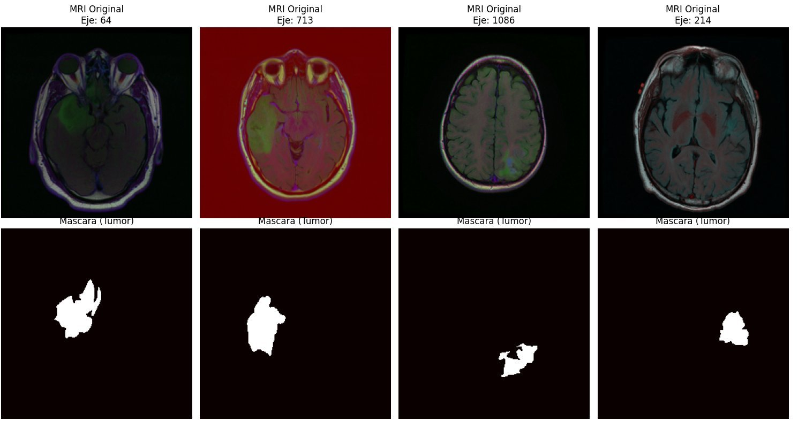

Segmentación semántica de tumores cerebrales en imágenes de resonancia magnética con arquitectura U-Net. El modelo clasifica cada píxel de la imagen identificando tejido sano y masa tumoral.
La evaluación del éxito en tratamientos contra el cáncer de cerebro (quimioterapia, radioterapia o cirugía) depende de la medición precisa de cambios volumétricos en el tiempo. Sin embargo, la inspección visual humana es subjetiva y tiene dificultades para detectar variaciones milimétricas críticas.
Este proyecto presenta una solución de Deep Learning para segmentación semántica de MRI, diseñada para transformar la delimitación manual —lenta y dependiente del especialista— en una cuantificación objetiva y reproducible. El objetivo es proporcionar a los médicos una "segunda opinión" basada en datos precisos, facilitando el seguimiento evolutivo del paciente y optimizando la toma de decisiones terapéuticas ante cambios mínimos en la carga tumoral.
Las imágenes provienen del The Cancer Imaging Archive (TCIA), disponibles en Kaggle. Los pacientes seleccionados cuentan con al menos una secuencia FLAIR — una modalidad de resonancia magnética que resalta las lesiones anulando la señal del líquido cefalorraquídeo — y datos de clusters genómicos.
El dataset contiene 3.929 imágenes de 110 pacientes con diagnóstico de glioma de bajo grado (LGG). Cada imagen tiene su máscara de segmentación correspondiente, anotada manualmente por un especialista: píxeles blancos = tumor, píxeles negros = tejido sano.
El dataset presenta un doble desbalance determinante:
| Porcentaje | |
|---|---|
| Imágenes con tumor | 34.9% |
| Imágenes sin tumor | 65.1% |
| Píxeles de tumor | 1.03% |
| Píxeles tejido sano | 98.97% |
El desbalance a nivel de imagen se resolvió balanceando el dataset. El desbalance a nivel de píxel — donde menos de 2 de cada 100 píxeles son tumor — justifica directamente la elección de Dice Loss como función de pérdida.
U-Net fue diseñada específicamente para segmentación biomédica. Su estructura simétrica tiene dos caminos: el encoder comprime la imagen buscando patrones (primero bordes simples, luego estructuras complejas como texturas tumorales), y el decoder reconstruye la resolución original para producir la máscara de segmentación píxel a píxel.
El elemento diferencial de U-Net son las skip connections: en cada nivel del decoder se concatena el feature map del encoder del mismo nivel. Al comprimir la imagen, el encoder pierde información espacial de alta resolución — bordes, contornos. Las skip connections transfieren esa información directamente al decoder, permitiendo reconstruir bordes precisos del tumor. Sin ellas, la segmentación sería difusa.
| Bloque | Operación | Filtros | Salida |
|---|---|---|---|
| enc1 | Conv2D × 2 + ReLU | 64 | 256 × 256 × 64 |
| MaxPool | MaxPool2D | — | 128 × 128 × 64 |
| enc2 | Conv2D × 2 + ReLU | 128 | 128 × 128 × 128 |
| enc3 | Conv2D × 2 + ReLU | 256 | 64 × 64 × 256 |
| enc4 | Conv2D × 2 + ReLU | 512 | 32 × 32 × 512 |
| Bridge | Conv2D × 2 + ReLU | 1024 | 16 × 16 × 1024 |
| up1 + skip | ConvTranspose + concat | 512 | 32 × 32 × 512 |
| up2 + skip | ConvTranspose + concat | 256 | 64 × 64 × 256 |
| up3 + skip | ConvTranspose + concat | 128 | 128 × 128 × 128 |
| up4 + skip | ConvTranspose + concat | 64 | 256 × 256 × 64 |
| Salida | Conv2D + Sigmoid | 1 | 256 × 256 × 1 |
La activación ReLU se usa en todos los bloques intermedios — deja pasar valores positivos y convierte los negativos en cero, permitiendo que la red aprenda relaciones no lineales. La Sigmoid solo aparece en la última capa: convierte la salida en una probabilidad por píxel entre 0 y 1, donde valores cercanos a 1 indican tumor.
Se eligió Dice Loss en lugar de Binary Cross-Entropy porque en problemas con clases desbalanceadas, la BCE penaliza igual todos los píxeles — ignorando la rareza de los píxeles positivos. La Dice Loss mide directamente el solapamiento entre predicción y máscara real, siendo invariante al desbalance:
Dice = 2·|X∩Y| / (|X| + |Y|) → Loss = 1 − Dice
Se implementó Early Stopping monitoreando la val_loss con paciencia de 5 épocas: si luego de 5 épocas consecutivas la pérdida en validación no mejora, el entrenamiento se detiene y se restauran los pesos del mejor epoch. Esto resolvió el problema observado en el entrenamiento inicial de 15 épocas, donde el modelo aún estaba convergiendo al finalizar.
La evaluación se realizó clasificando cada píxel individual del set de test:
| Métrica | Valor | Interpretación |
|---|---|---|
| TN — Tejido sano | ~20 M píxeles | Gran mayoría de la imagen, bien clasificada |
| TP — Tumor detectado | 178 K píxeles | Objetivo a maximizar |
| FP — Falso positivo | 120 K píxeles | Bajo: el modelo no es "paranoico" |
| FN — Tumor no detectado | 169 K píxeles | Objetivo a reducir |
| Métrica | Valor |
|---|---|
| Precision | 0.597 |
| Recall | 0.513 |
| F1-Score / Dice | 0.552 |
Las siguientes imágenes muestran casos donde el modelo detectó correctamente la presencia de tumor. Se visualizan la resonancia magnética original, la máscara real anotada por el médico y la predicción de la IA con su coeficiente Dice individual.
En la Muestra 8 (Dice: 0.42) el modelo localiza y segmenta la masa tumoral con buena cobertura, aunque los bordes son algo más amplios que la máscara real. En la Muestra 9 (Dice: 0.42) el tumor es más pequeño: la predicción identifica la ubicación correctamente pero evidencia la dificultad del modelo para delimitar lesiones de menor tamaño — una oportunidad de mejora concreta.

La arquitectura U-Net logra pasar de una detección nula a una identificación clara de la masa tumoral. El modelo localiza correctamente los tumores pero falla en la delimitación precisa de sus bordes — exactamente el patrón esperado en una primera iteración.